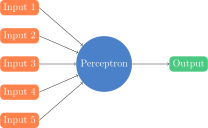
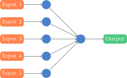
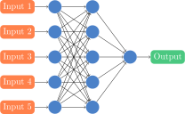

Big Data and Co
A glimpse on possibilities in Accounting
Who am I?
Assistant Professor of Accounting at Rady
- PhD in Finance - Dauphine University, France
- Master in Finance - Dauphine University, France
- Master in AI - Toulouse University, France
- Master in CS Engineering - INSA, France
Research
Before
- AI - Reinforcement Learning
Recently
- Banking Regulation
- Impact of data on financing decisions
Now
- Real effects implications of accounting rules
- Public disclosures and Information Processing
International Experience
Hong Kong University
Harvard
Imperial College Business School
Contact
mmilone@ucsd.edu
And when we will be back on campus:
858-534-8511
Office 3W102
Financial Accounting
Aggregation of information into financial statements
Provides information about past transactions
Managerial Accounting
Produce information for management decisions
Needs a lot of Data
Focuses on the future
Need for prediction
On the need for Data
Cost estimations
Cost allocations
Breakeven Point
Sensitivity Analysis
Transfer Pricing
On the need for Prediction
About the future
Forecast of Cash Flows
Risk Management
...
About things we do not know
Cost Analysis
Fraud detection
...
Data is coming ...
1 ZB = 1 Billion Terabytes
Big Data
Are companies there yet?
What is Big Data?
Just a Big Buzzword?
Just a lot more data?
The combination of previously separate datasets?
Structure vs unstructure data?
What are companies doing today?
Business Analytics
Microsoft BI and co
Predictive Analytics
Slowly Starting
RPA
= Robot Processing Automation
Automation of routine rules-based business processes
Embedded into Enterprise Resource Planning (ERP) softwares
UiPath, Blue Prism, Automation Anywhere
RPA
Examples
Invoice processing
Data validation
Customer Relationship
HR processes (payroll, ...)
RPA
Why does it matter?
Digitization of processes
Enhances the creation and gathering of data
First step towards Intelligent Automation
RPA
< 50% of companies have started RPA
Data from EY, 2018
RPA
3% of enterprises have achieved scale
Data from EY, 2018
Machine Learning
And how it affects Accounting
How do we solve problems?
Need to find an Algorithm
= Steps to solve a problem
How about ML?
We want the machine to find the algorithm by itself
How do we do that?
Supervised / Unsupervised Learning
Reinforcement Learning

How does the machine learn?
Need to map an input to an output
Input: board, image
Output: move, number
How do we map these?!
Highly non-linear math function
Highly what?!
Possible Methods
Regression / Classification Trees
Random Forests
K-nearest neighbor
Neural Networks
...
Neural Networks
Neural Networks
Neural Networks
Neural Networks
Neural Networks

Sure, but how does it learn?!
Supervised Learning
Why do we care?
Real life problems are highly non-linear
Difficult to find rule based algorithms
Examples
Image recognition
Translations
Self-Driving
Natural Language Processing
...
Machine Learning in Accounting
Error detections
High risk transactions detection
Transaction allocations
Fraud detections
Machine Learning in Public Accounting
ML requires a lot of data to learn
Audit firms observe many firms over time
They observe errors in many different situations
Increased ability to use ML methods
RPA + ML = Intelligent Automation
This is awesome!
Not really...
Computers are "too" smart ...
Overfitting problems
Regularization methods
Or not good enough...
Techniques allow to tackle complex problems
But we do not yet have enough ressources
Basically, it is hard to design ...
Machine Learning Pitfalls (1)
ML (supervised) requires a lot of data to learn
Machine Learning Pitfalls (2)
Can only learn information from the given data
Garbage In = Garbage Out
Cannot adapt to unknown situations
Machine Learning Pitfalls (3)
Need to have a way to improve ...
... still need humans
Is that all?
Blockchain
Created to solve the double spending problem without trusted third party
Traditionally
Third party records all transactions
When asked for, can say if a new transaction is possible (i.e. pay)
All parties involved trust the third party
Blockchain in Accounting
Like Accounting, Blockchain is about registering transactions
It seems likely to disrupt accounting
Blockchain in Accounting
Audit is about verifying transactions
Blockchain provides a way to trust the information
Implementations started in China
Should we be worried?
Not really ...
Accounting involves a lot of reasoningRemember
- Identifying Transactions
- Recording / Measuring -- Needs concepts (GAPP)
- Communicating (BS, OE, IS, SCF)
Maybe one day
Blockchain + ML
But we have time